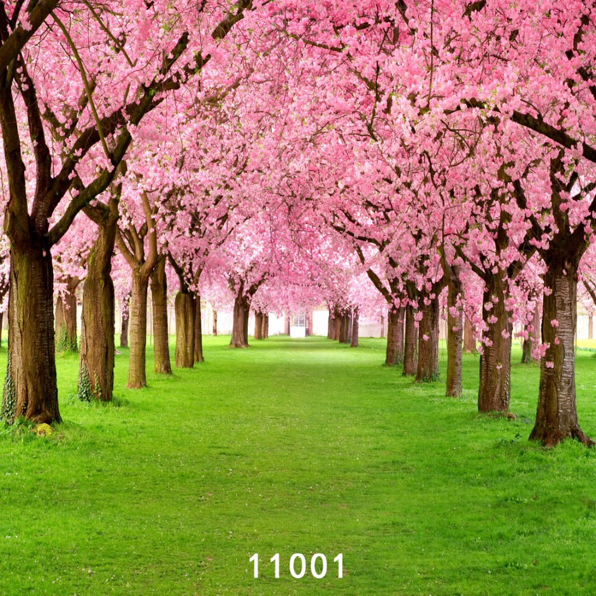

Wikipedia began as a related project for Nupedia. Nupedia was a free online English-language encyclopedia project. Nupedia's articles were written and owned by Bomis, Inc which was a web portal company. The main people of the company were Jimmy Wales, the guy in charge of Bomis, and Larry Sanger, the editor-in-chief for Nupedia. Nupedia was first licensed under the Nupedia Open Content License which was changed to the GNU Free Documentation License before Wikipedia was founded and made their first article when Richard Stallman requested them.[4]
Larry Sanger and Jimmy Wales are the ones who started Wikipedia.[5][6] Wales is credited with defining the goals of the project.[7][8] Sanger created the strategy of using a wiki to reach Wales' goal.[9] On January 10, 2001, Larry Sanger proposed on the Nupedia mailing list to create a wiki as a "feeder" project for Nupedia.[10] Wikipedia was launched on January 15, 2001. It was launched as an English-language edition at www.wikipedia.com,[11] and announced by Sanger on the Nupedia mailing list.[7] Wikipedia's policy of "neutral point-of-view"[12] was codified in its initial months, and was similar to Nupedia's earlier "nonbiased" policy. Otherwise, there weren't very many rules initially, and Wikipedia operated independently of Nupedia.[7]